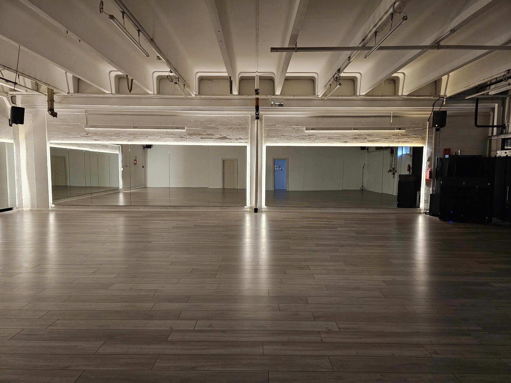
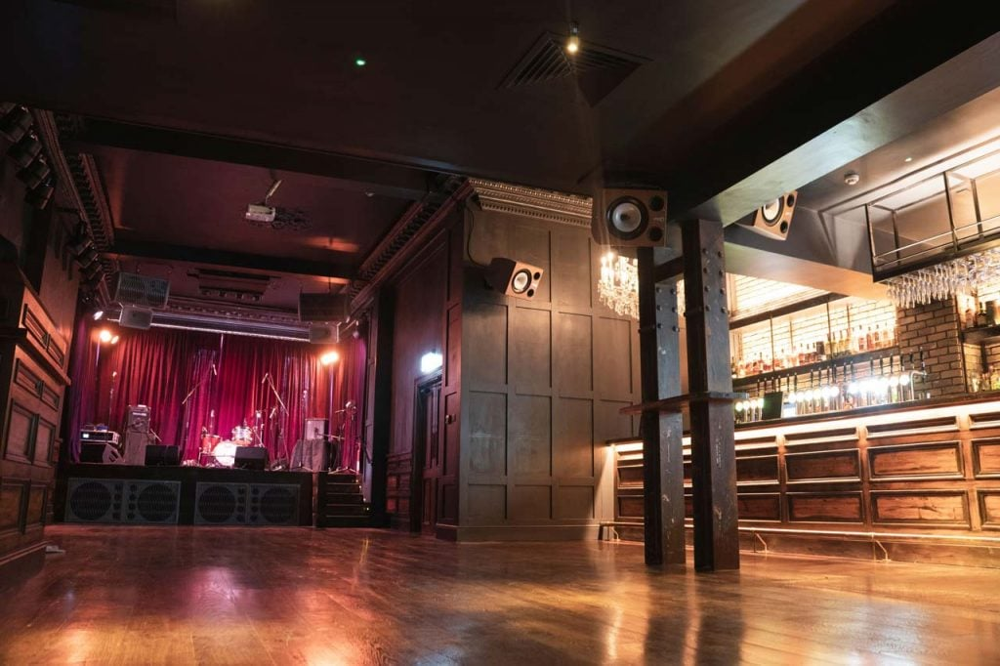

29 OctoberThursday

Wigwam
The Thursday prep party in central Dublin.
54 Middle Abbey Street, Dublin 1
The festival changes venue by day. Save each map before the weekend.
The Thursday prep party in central Dublin.
54 Middle Abbey Street, Dublin 1

The main festival base on Friday and Saturday.
Unit 5, Docklands Innovation Park, Dublin 3

The Sunday closing party in Dublin city centre.
1–2 Adam Court, off Grafton Street, Dublin 2
Wigwam and Lost Lane are both in central Dublin. Walking, Luas, bus and taxi options serve the area.
BPM Studio is at Docklands Innovation Park. Check your route and travel time before Friday and Saturday sessions.
Use Transport for Ireland for current routes and service information.
Plan with TFI ↗The festival spans Dublin 1, Dublin 2 and Dublin 3. For accommodation support or local-host enquiries, contact the festival directly.
Ask about accommodation